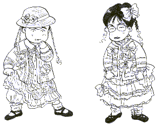
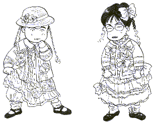
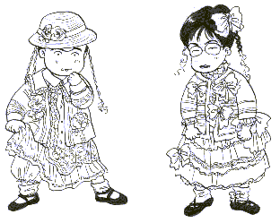

Monolog 独白 ・
（６）新カテゴリー  工事中だったスペシャルルームをデータルームとしてオープンしました。このデータがみなさまの参考になれば幸いです。 データの転載を快く許諾していただいた多摩（ターニア）さん、麻雀フォーラム、＠niftyさんに感謝いたします。 珍奇牌のコーナーも早くオープンさせなければと思っていますが、なかなか手が回りません。もう少しお時間をください。m(＿ ＿)m
 工事中だったスペシャルルームをデータルームとしてオープンしました。このデータがみなさまの参考になれば幸いです。 データの転載を快く許諾していただいた多摩（ターニア）さん、麻雀フォーラム、＠niftyさんに感謝いたします。 珍奇牌のコーナーも早くオープンさせなければと思っていますが、なかなか手が回りません。もう少しお時間をください。m(＿ ＿)m

以前へ 以降へ 目次へ